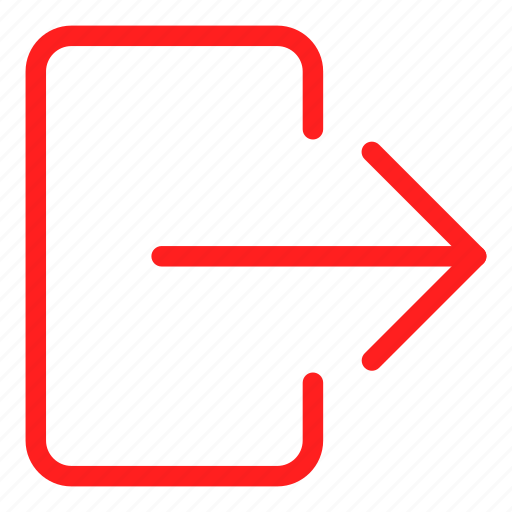

<ion-app>
  <ion-menu *ngIf="show" style="overflow-y: hidden;" menuId="main-menu" content-id="main" >
    <ion-content>
      <div class="menu-header-bg"></div>
      <div class="header-content">
        
        <ion-label>
          <h2>{{username}}</h2>
          <p>{{emailuser}}</p>
        </ion-label>
      </div>
      <ion-list class="menu-items">
        <ion-menu-toggle>
          <ion-item routerLink="/mainscreen">
            <ion-icon name="home-sharp" slot="start"></ion-icon>
            <ion-label>Home</ion-label>
          </ion-item>
        </ion-menu-toggle>
        <ion-menu-toggle>
          <ion-item routerLink="/accountinfo">
            <ion-icon name="person-sharp" slot="start"></ion-icon>
            <ion-label>Account</ion-label>
          </ion-item>
        </ion-menu-toggle>
        <ion-menu-toggle>
          <ion-item  routerLink="#">
            <ion-icon name="newspaper-sharp"slot="start"></ion-icon>
            <ion-label>Updates Log</ion-label>
          </ion-item>
        </ion-menu-toggle>
        <ion-menu-toggle>
          <ion-item  routerLink="/newentry">
            <ion-icon name="add-circle-sharp"slot="start"></ion-icon>
            <ion-label>Create Entry</ion-label>
          </ion-item>
        </ion-menu-toggle>
        <ion-menu-toggle>
          <ion-item (click)="signout()" class="sign-out-item">
            
            <ion-label>Sign out</ion-label>
          </ion-item>
        </ion-menu-toggle>
      </ion-list>
    </ion-content>
  </ion-menu>
  <ion-router-outlet id="main"></ion-router-outlet>
</ion-app>

